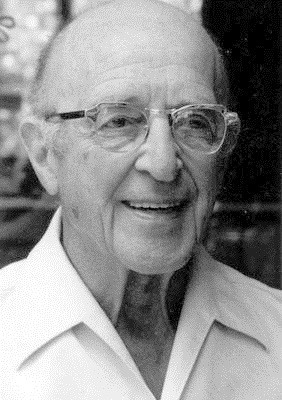

보라해바라기의 과거
고등학교
보라해바라기는 심리학에 관심이 많은 고등학생이 되었다. 심리학과 관련된 책도 열심히 읽고 그와 관련된 활동들도 참여하며 심리학 분야에 종사하고 싶다는 생각을 하게 된다.
특히 빅터플랭클의 죽음의 수용소에서를 읽고 심리학의 위대함에 대해 알게 된다.

그 후 보라해바라기는 상담분야에 큰 관심을 가지게 된다. 상담심리학분야에 많은 학자들이 존재하지만 보해는 칼로저스의 학문에 흥미를 보였다.
그는 내담자를 대하는 치료자의 태도로 진실성, 무조건적 긍정적 존중, 공감적 이해를 강조하는데 보해는 이에 크게 공감했다.